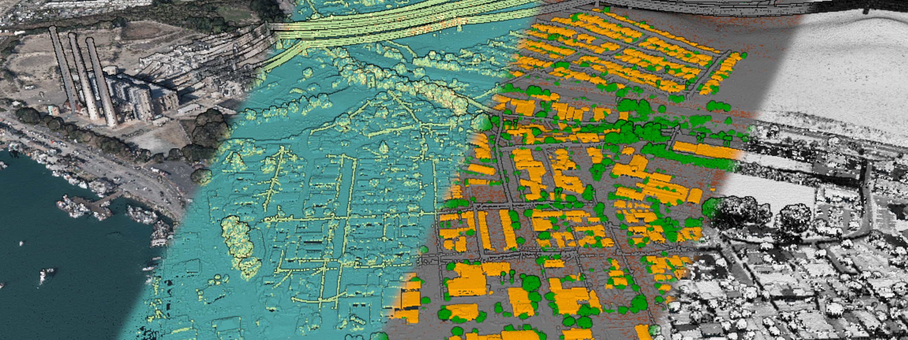
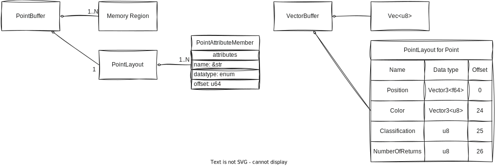
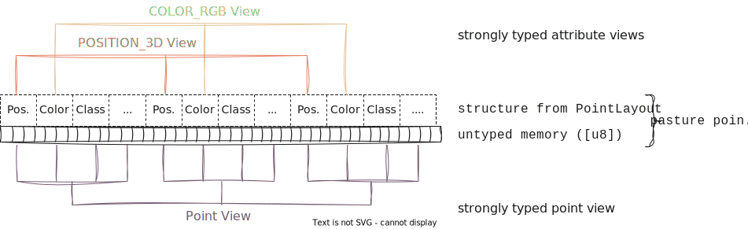
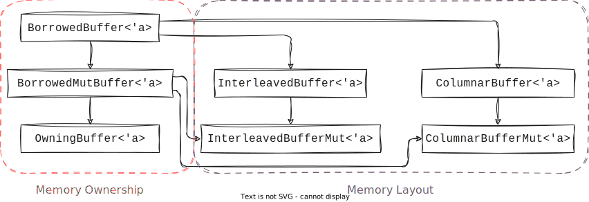

pasture
pasture is a Rust library for working with LiDAR point cloud data. Its main purpose is to provide data structures for handling collections of points with a wide range of attributes, as well as the serialization to and deserialization from well-known point cloud formats, such as LAS or 3D Tiles. The data structures that pasture provides are meant to be as efficient as possible in terms of memory usage and access speed, while maintaining a level of flexibility and safety that C/C++ libraries such as PDAL do not have. Memory and I/O are the main focus of pasture, so it works best as a building block for tools and applications that require efficient handling of LiDAR data. If you are looking for a library that provides processing and analysis capabilities, pasture is probably not what you are looking for (though pasture-algorithms eventually aims at providing more processing capabilities).
About this guide
In this guide you will learn how to use pasture in your own code and why pasture is designed the way it is. It requires some knowledge of the Rust programming language, but no prior knowledge of LiDAR point clouds. To get a feel for how pasture code looks, here is a first example showing how to read point data from a LAS file:
use anyhow::{bail, Context, Result}; use pasture_core::{ containers::{BorrowedBuffer, VectorBuffer}, layout::attributes::POSITION_3D, nalgebra::Vector3, }; use pasture_io::base::{read_all}; fn main() -> Result<()> { // Reading a point cloud file is as simple as calling `read_all` let points = read_all::<VectorBuffer, _>("pointcloud.las").context("Failed to read points")?; if points.point_layout().has_attribute(&POSITION_3D) { for position in points .view_attribute::<Vector3<f64>>(&POSITION_3D) .into_iter() .take(10) { println!("({};{};{})", position.x, position.y, position.z); } } else { bail!("Point cloud file has no positions!"); } Ok(()) }
Using pasture in your code
In this section we will look at how the pasture library is structured and how you can include it in your code.
The structure of pasture
pasture consists of several related libraries:
pasture-corecontains all core data structures: Point buffer types, thePointLayouttype, predefined attribute definitions, as well as common math code for vectors and bounding boxespasture-iocontains code for doing point cloud I/O, i.e. reading and writing files in common formatspasture-derivecontains the#[derive(PointType)]macro, which auto-generates aPointLayoutfrom a Ruststructpasture-algorithmscontains algorithms for working with point clouds. It is currently in a very early stage of development and contains only a limited set of algorithms. If you want to contribute, pull requests are welcome!
Using pasture in your code
For most projects, you will typically include pasture-core, pasture-io, and pasture-derive by adding the following code to your Cargo.toml:
pasture-core = "0.4.0"
pasture-io = "0.4.0"
pasture-derive = "0.4.0"
If you have your own I/O code, you probably won't need pasture-io.
Looking at the example shown in the Overview section, we can understand the basic include structure:
use pasture_core::{ containers::{BorrowedBuffer, VectorBuffer}, layout::attributes::POSITION_3D, nalgebra::Vector3, }; use pasture_io::base::{read_all};
The two main modules that you will include from in pasture-core are containers and layout. containers contains all traits and implementations for the various point buffer types that pasture supports. They are explained in detail in the point buffers section of this tutorial. layout contains the PointLayout type and all its associated types, such as the predefined attribute definitions, which are explained in detail in the point layout section of this tutorial.
Since point clouds are spatial data, they require a bit of linear algebra, for which pasture uses the nalgebra crate. pasture-core re-exports nalgebra so that you can interface with its types while using pasture.
For doing I/O, pasture-io contains several built-in types. The simplest one is the read_all function included in the example, but the base module of pasture-io also contains traits for types that read from a point cloud file or write to a point cloud file. Point cloud I/O is explained in depth in another section of this tutorial.
The data model of pasture
In order to effectively work with pasture, it helps to understand the underlying data model, and how it relates to the typical structure of LiDAR point clouds. In this section, you will learn:
The basics of LiDAR point clouds
LiDAR stands for 'Light Detection And Ranging' and is a technology for the acquisition of three-dimensional datasets called point clouds. LiDAR is typically used to create 3D scans of the real world, from individual objects like trees or cultural artifacts, up to the elevation profile of whole countries. One of the most hands-on things one can do with such a point cloud is to visualize it interactively. A popular tool for point cloud visualizations is Potree, which runs inside most modern browsers. Feel free to explore the examples that Potree provides to get a feel for what a point cloud looks like. The CA13 example is a good start, because it shows the main challenges when working with (LiDAR) point clouds:
- Point clouds are often spatially large, covering dozens or hundreds of kilometers of space
- Point clouds are made up of millions, billions, or sometimes even trillions of individual points
- Point clouds can encode various attributes within a point
Here is a screenshot from the CA13 example, displaying a point cloud with four different attributes (color, number of returns, classification, intensity):

Since pasture deals with the memory representation of point clouds, how would we represent a point cloud in memory in a systems programming language such as Rust?
A point cloud is a collection of individual points, where each point is simply a tuple of attributes. LiDAR point clouds are always spatial, so each point has a position attribute, typically a vector in 3-dimensional space. Other attributes might include a monochrome intensity value or an RGB color, sensor-specific values such as the number of return pulses for each laser pulse, or high-level attributes such as the type of object that a point belongs to (typically called the classification of a point). So a point cloud data structure in Rust might look like this:
#![allow(unused)] fn main() { use nalgebra::Vector3; type Position = Vector3<f64>; type Classification = u8; type Color = Vector3<u8>; type NumberOfReturnPulses = u8; type Point = (Position, Color, Classification, NumberOfReturnPulses); type PointCloud = Vec<Point>; }
Only a few lines of code and we have a working point cloud data type. So why do we need pasture at all? Turns out, point clouds are more complex than they might look like at a first glance. In particular, pasture solves several problems that our current data structure has:
- Problem 1: Different point clouds have different attributes, but there are a fairly large number of common attributes that we do not want to rewrite every time
- Problem 2: Point cloud data is typically stored in files with specific binary layouts, such as LAS. We don't want to read/write these files manually
- Problem 3: We might want specific control over the memory layout of a single point, including the size of fields and their alignment
- Problem 4: We might want specific control over the memory layout of all points.
Vechas a so-called interleaved memory layout, meaning the attributes of each point are interleaved (stored together in memory). What if we don't want that and instead want to store the same attribute for multiple points together in memory (as so-called columnar memory layout)? - Problem 5: A point cloud might have more metadata associated with it, for example an axis-aligned bounding box
How pasture represents a point cloud in memory
pasture provides a very flexible memory model for the in-memory representation of a point cloud. This model is somewhat complex in order to allow fine-grained control over the memory layout as well as the memory ownership model, but don't worry as there are some sensible defaults!
The core data structure in pasture is called a point buffer. A point buffer is a combination of one or more memory regions together with a metadata object called a point layout, which describes which attributes each point has and how exactly they are represented in memory. This is essentially a runtime equivalent of the representation of a user-defined composite type in Rust. It stores the data type, size, offset, and alignment of all attributes within a single point, just as the Rust compiler generates for a custom struct to determine which members are located at which offsets. The following diagram illustrates this concept using an abstract point buffer (left) and the specific VectorBuffer type together with the Point type from the previous example (right):

When working with point clouds in pasture, you have two options for accessing the data: Accessing individual attributes through an attribute specifier (called a PointAttributeDefinition), or accessing individual points as user-defined structs. Since the underlying memory that a point buffer references is untyped, but Rust is a statically typed language, there has to be a point where we move from untyped to typed data. pasture does this through data accessor objects called views. The basic point buffer API only deals with untyped memory (typically through byte slices [u8]) but views provide strongly typed access to point attributes and points as a whole:

pasture has many built-in definitions for commonly used point attributes, which are listed in the layout::attributes module. Putting everything together, we can now understand the example code from the Overview section:
use anyhow::{bail, Context, Result}; use pasture_core::{ containers::{BorrowedBuffer, VectorBuffer}, layout::attributes::POSITION_3D, nalgebra::Vector3, }; use pasture_io::base::{read_all}; fn main() -> Result<()> { let points = read_all::<VectorBuffer, _>("pointcloud.las").context("Failed to read points")?; if points.point_layout().has_attribute(&POSITION_3D) { for position in points .view_attribute::<Vector3<f64>>(&POSITION_3D) .into_iter() .take(10) { println!("({};{};{})", position.x, position.y, position.z); } } else { bail!("Point cloud files has no positions!"); } Ok(()) }
In line 10 we read a point cloud from a file and store it as a VectorBuffer, a builtin point buffer type that pasture provides. As the name suggest, it stores points using a Vec, specifically a Vec<u8> since point buffer memory is always untyped in pasture. This is necessary because the exact format of a point record is not known until runtime as it depends on the format of the LAS file we read. The buffer gives access to its PointLayout, which we can ask about the attributes that the point cloud contains (line 12). The POSITION_3D value is one of the predefined attribute definitions and represents the 3D position attribute, as the name implies. If such an attribute is present in the point cloud, we can obtain a strongly typed view of the 3D positions (line 14), using the view_attribute::<T> function, where T is the data type that we want to access the attributes in. Views are convertible into iterators, so we can use the attribute view to iterate over all positions of the point cloud (or the first 10, in this example). Under the hood, pasture handles all the data reading from the untyped memory within the VectorBuffer.
"I'm not convinced, why all the work?"
Depending on your personal background and preferences, you might be sceptical about this approach to point cloud data management. Why do we need the PointLayout type, why the views and why do we have to manually specify the type of the positions once we obtain a view to them? Can't pasture do this automatically?
It helps to look at another Rust library for point cloud processing (that is also used in pasture for dealing with LAS and LAZ files): The las crate. It has the following example code in its documentation:
use las::{Read, Reader}; let mut reader = Reader::from_path("tests/data/autzen.las").unwrap(); for wrapped_point in reader.points() { let point = wrapped_point.unwrap(); println!("Point coordinates: ({}, {}, {})", point.x, point.y, point.z); if let Some(color) = point.color { println!("Point color: red={}, green={}, blue={}", color.red, color.green, color.blue, ); } }
las has a custom Reader type through which we can iterate over all points in a LAS file (lines 2 and 3). The points themselves have a specific type called Point which provides direct accessors to the position attribute using point.x, point.y and point.z (the type itself is ommited in the example code due to the type deduction rules of the Rust compiler). This type is the same, no matter what type of LAS file we load, so the las crate has to do some conversion internally from the point records within the LAS file to this Point type. This approach prioritizes convenience at the expense of performance. The conversion process itself has some overhead, and the Point type has a lot of memory overhead, since it has to include every possible LAS attribute (currently there are about 20 as per the LAS specification version 1.4). The least amount of memory that a point in a LAS file requires is 20 bytes, but the Point structure from the las crate always requires 136 bytes (64-bit, version 0.8.1). That's an overhead of almost 7 times! Putting this into perspective, on a machine with 16GB of RAM, we could keep about 117 million las points in RAM, but 800 million raw LAS points.
With pasture, we can specify the exact memory layout of the point records, so we could get a PointLayout that exactly matches the binary layout of a point record in the LAS file. Besides the improvement in memory efficiency, this also makes parsing a lot simpler, in the best case parsing is a no-op (check out the fast LAS parsing example of pasture). But it doesn't end there. With pasture, since we have precise control over the memory layout of a point buffer, we can also omit attributes. Oftentimes, we are not interested in all the attributes within a point cloud. In cases like these, pasture allows creating a reduced PointLayout that for example only contains the POSITION_3D attribute. Reading a point cloud using this layout will only parse the 3D positions and ignore all other data, further increasing the memory efficiency.
Lastly, the approach of the las crate always assumes an interleaved memory layout. It is impossible to read data into a columnar memory layout this way. The control that pasture provides makes this possible and is often as simple as replacing the VectorBuffer type with the default columnar buffer type: HashMapBuffer.
Understanding the PointLayout type
In this section you will learn all about the PointLayout type in pasture. You will learn how it is used to represent the structure of the points in your point clouds, how it relates to individual point attributes, and how you can create your own PointLayout either from hand or from an existing struct definition. Additionally you will learn about all the built-in point attribute definitions that pasture provides, and how you can create your own point attributes.
Point attributes
In the data model section of this tutorial we learned that pasture models a point cloud as a collection of tuples of attributes. A point attribute is a uniquely identifiable piece of data, which pasture represents using two types: PointAttributeDefinition and PointAttributeMember. Understanding how attributes combine to form a PointLayout will also answer the question why there are two distinct attribute types in pasture.
When we talk about specific point attributes, we often refer to them by their name, which is why pasture uses strings as the unique identifiers for point attributes. To get a feel for the different types of point attributes that are commonly used, we can look at the LAS file specification, specifically under the section that defines the point data record formats. Looking at point data record format 0---the simplest format that LAS provides---we see the following list of point attributes:
| Item | Format | Size | Required |
|---|---|---|---|
| X | long | 4 bytes | yes |
| Y | long | 4 bytes | yes |
| Z | long | 4 bytes | yes |
| Intensity | unsigned short | 2 bytes | no |
| Return Number | 3 bits (bits 0-2) | 3 bits | yes |
| Number of Returns (Given Pulse) | 3 bits (bits 3-5) | 3 bits | yes |
| Scan Direction Flag | 1 bit (bit 6) | 1 bit | yes |
| Edge of Flight Line | 1 bit (bit 7) | 1 bit | yes |
| Classification | unsigned char | 1 byte | yes |
| Scan Angle Rank (-90 to +90) – Left Side | signed char | 1 byte | yes |
| User Data | unsigned char | 1 byte | no |
| Point Source ID | unsigned short | 2 bytes | yes |
We see the name of each attribute (the Item column), the data type used to represent the attribute (the Format) column, how many bits or bytes a single value of that attribute requires (the Size column), and whether or not it is required to include this value in the LAS point record (the Required column). We don't really care about the last column, but the first three columns are interesting. Not only do they explain what types of data a single point might contain, they also give information of the memory representation of the point data. pasture deals with efficient in-memory representations of point clouds, so the mapping of memory ranges to the actual point attributes is a central part of what pasture does. It does this by using precisely the information we saw in the table:
Each point attribute in pasture has a unique name, a data type and a size! If you look at the PointAttributeDefinition type, you will see three corresponding accessors:
fn name(&self) -> &strfor accessing the name of the attributefn datatype(&self) -> PointAttributeDataTypefor accessing the data type of the attributefn size(&self) -> u64for accessing the size in bytes of the attribute
If we look into the layout::attributes module we see all the predefined point attributes that pasture provides:
| Name | Description |
|---|---|
| CLASSIFICATION | Attribute definition for a classification. Default datatype is U8 |
| CLASSIFICATION_FLAGS | Attribute definition for the classification flags. Default datatype is U8 |
| COLOR_RGB | Attribute definition for an RGB color. Default datatype is Vec3u16 |
| EDGE_OF_FLIGHT_LINE | Attribute definition for an edge of flight line flag. Default datatype is Bool |
| GPS_TIME | Attribute definition for a GPS timestamp. Default datatype is F64 |
| INTENSITY | Attribute definition for an intensity value. Default datatype is U16 |
| NIR | Attribute definition for near-infrared records (NIR). Default datatype is U16 |
| NORMAL | Attribute definition for a 3D point normal. Default datatype is Vec3f32 |
| NUMBER_OF_RETURNS | Attribute definition for the number of returns. Default datatype is U8 |
| POINT_ID | Attribute definition for a point ID. Default datatype is U64 |
| POINT_SOURCE_ID | Attribute definition for a point source ID. Default datatype is U16 |
| POSITION_3D | Attribute definition for a 3D position. Default datatype is Vec3f64 |
| RETURN_NUMBER | Attribute definition for a return number. Default datatype is U8 |
| RETURN_POINT_WAVEFORM_LOCATION | Attribute definition for the return point waveform location in the LAS format. Default datatype is F32 |
| SCANNER_CHANNEL | Attribute definition for the scanner channel. Default datatype is U8 |
| SCAN_ANGLE | Attribute definition for a scan angle with extended precision (like in LAS format 1.4). Default datatype is I16 |
| SCAN_ANGLE_RANK | Attribute definition for a scan angle rank. Default datatype is I8 |
| SCAN_DIRECTION_FLAG | Attribute definition for a scan direction flag. Default datatype is Bool |
| USER_DATA | Attribute definition for a user data field. Default datatype is U8 |
| WAVEFORM_DATA_OFFSET | Attribute definition for the offset to the waveform data in the LAS format. Default datatype is U64 |
| WAVEFORM_PACKET_SIZE | Attribute definition for the size of a waveform data packet in the LAS format. Default datatype is U32 |
| WAVEFORM_PARAMETERS | Attribute definition for the waveform parameters in the LAS format. Default datatype is Vector3 |
| WAVE_PACKET_DESCRIPTOR_INDEX | Attribute definition for the wave packet descriptor index in the LAS format. Default datatype is U8 |
Point attribute data types
The description of each built-in attribute includes a statement of the form "The default datatype is X". pasture makes an assumption what a good default datatype is for each attribute. Here are some examples:
POSITION_3D->Vec3f64CLASSIFICATION->U8COLOR_RGB->Vec3u16
These datatypes roughly correspond to primitive types that Rust supports, plus several vector types provided by nalgebra. pasture defines the PointAttributeDataType enum, which constrains the valid datatypes for point attributes. It includes all integer and floating-point types up to and including 64 bits, some three- and four-component vector types (themselves of integers and floating-point values), as well as two special types ByteArray(u64) and Custom{ ... }. Each of these datatypes has a well-known binary representation and corresponds to a specific Rust type, which is what allows conversions between untyped memory ([u8]) and strongly typed attribute data. This correspondence is established using the PrimitiveType trait, which is a trait that pasture implements for the Rust integer and floating-point primitive types and some of the nalgebra vector types. It allows code like this:
#![allow(unused)] fn main() { let datatype: PointAttributeDataType = f64::data_type(); }
For memory safety, pasture uses the bytemuck crate, which ensures that all memory transmutations from and to untyped memory are safe. This is done by requiring that all pasture primitive types have to implement bytemuck::Pod. This has some interesting but also limiting side-effects, in particular it prevents pasture from supporting the Rust primitive type bool, which is not valid for any bit pattern (i.e. it is represented using 8 bits, but only the bit patterns 0 and 1 are valid). We will shortly see that this also has implications for which types of structs you are allowed to use as point representations.
Custom attributes
Besides the built-in attribute definitions, you can easily create your own point attributes using PointAttributeDefinition::custom:
#![allow(unused)] fn main() { let custom_attribute = PointAttributeDefinition::custom(Cow::Borrowed("Custom"), PointAttributeDataType::F32); }
It is a const fn, so you can create compile-time constant point attributes, which is precisely what all the built-in attribute definitions are! pasture-io uses the same mechanism to add LAS-specific attribute definitions, for example the ATTRIBUTE_LOCAL_LAS_POSITION which corresponds to a point position in the local space of a LAS file, represented using 32-bit signed integers:
#![allow(unused)] fn main() { pub const ATTRIBUTE_LOCAL_LAS_POSITION: PointAttributeDefinition = PointAttributeDefinition::custom( Cow::Borrowed("LASLocalPosition"), PointAttributeDataType::Vec3i32, ); }
From attributes to PointLayout
So far we saw how pasture represents a single point attribute. Now we will look at combining multiple point attributes into the full description of a point cloud, i.e. the PointLayout type! This will also answer the question why there are two types for point attributes in pasture!
Recall the custom Point type that we wrote in the Data Model section:
use nalgebra::Vector3; type Position = Vector3<f64>; type Classification = u8; type Color = Vector3<u8>; type NumberOfReturnPulses = u8; type Point = (Position, Color, Classification, NumberOfReturnPulses);
Let's restate it using struct syntax instead of tuple syntax:
struct Point { pub position: Position, //Vector3<f64> pub color: Color, //Vector3<u8> pub classification: Classification, //u8 pub number_of_returns: NumberOfReturnPulses, //u8 }
To describe this point type in pasture, we first need one PointAttributeDefinition for each of the members:
use pasture_core::layout::attributes::*; let position_attribute = POSITION_3D; let color_attribute = COLOR_RGB.with_custom_datatype(PointAttributeDataType::Vec3u8); let classification_attribute = CLASSIFICATION; let number_of_returns_attribute = NUMBER_OF_RETURNS;
We can use the built-in attribute definitions for every attribute, which is convenient. The only change is that pasture assumes RGB colors to be represented using the Vec3u16 datatype (a convention taken from the LAS file format), but here we want 8-bit unsigned integers instead, so we modify the datatype to be Vec3u8 instead. Note that this does not affect the global COLOR_RGB constant but instead creates a new PointAttributeDefinition instance.
In order to combine these attributes into a PointLayout, we have to understand what the purpose of the PointLayout structure is: The PointLayout provides the information necessary to go from untyped memory to strongly typed attribute and point values! This means that it has to include all the information about the exact memory layout of each attribute as well as their relationship to each other, for example the order of the attributes within a point record. So if you write the following code, pasture needs to know how to execute it and whether it is correct or would violate memory safety:
let buffer: VectorBuffer = ...; // A buffer that stores `Point` values, obtained from somewhere // Get the color of the first point: let color = buffer.view_attribute::<Vector3<u8>>(&color_attribute).at(0);
Since VectorBuffer stores untyped memory internally (Vec<u8>), here is what pasture has to do:

The call .at(0) in the code example above translates to the instruction "Read 3 bytes at offset 24 and cast to Vector3<u8>" in the figure. It contains three pieces of information that are only known at runtime and which are included in the PointLayout typeThe necessary information is actually calculated not only from the PointLayout, but also based on the memory layout of the point buffer, since offsets are calculated differently in interleaved memory layout vs. columnar memory layout. We will learn all about that in the section on buffer memory layouts.:
- The read offset (24 bytes)
- The read size (3 bytes)
- The static type that the memory should be interpretedInterpreted is the correct term here, because that is what all statically typed programming languages do: Static types provide the semantics for raw memory and hence define how memory regions are interpreted, from which follow the correct assembly instructions for reading from or writing to memory. If we write
let m = variable.member;, it is the job of the compiler to figure out the correct instructions for reading the memory corresponding tomemberfrom the instancevariablebased on the static type ofvariable. The compiler does this at compile time,pasturedoes something similar at runtime! as (Vector3<u8>)
Two of the three properties are already included in the PointAttributeDefinition type: The read size is simply the size of the attribute datatype, and the static type is given by the user (Vector3<u8>) and has to correspond to the attribute datatype. pasture performs a runtime check in view_attribute to make sure that these two types match! The offset however is not known given only a PointAttributeDefinition. It depends on the order of attributes within the point type. Take a look at the following two point type definitions and try to figure out in which sense they are identical and in which sense they differ:
struct Point1 { pub position: Position, //Vector3<f64> pub color: Color, //Vector3<u8> pub classification: Classification, //u8 pub number_of_returns: NumberOfReturnPulses, //u8 } struct Point2 { pub classification: Classification, //u8 pub color: Color, //Vector3<u8> pub number_of_returns: NumberOfReturnPulses, //u8 pub position: Position, //Vector3<f64> }
Both types have the exact same point attributes but in a different order. Even for attributes at the same index, such as the color attribute, their memory locations can differ. The actual offset is determined by the Rust compiler when calculating the representation of the type. The default algorithm is implementation-defined, but assuming a simple algorithm the offset of Point1::color might be 24 bytes (the size of the position field), whereas the offset of Point2::color might be 1 byte (the size of the classification field).
If you want to know all the details about point type memory layout and how to manually build a PointLayout, read on! If you only care about something that works, skip to "Using the #[derive(PointType)] macro".
Details of point memory layouts
Getting the memory layout of a point type right is one of the more challenging aspects that pasture has to deal with. It matters most when going from untyped memory to user-defined point types, such as the Point1 and Point2 types from the previous example. Note that if you only ever access point data through the attribute views and never use the point views (which require a strongly typed point type such as Point1), most of these details will not concern you!
We will now build a PointLayout from scratch for the Point2 type and learn all about type representations and alignment requirements, as well as some details regarding memory transmutations. Time to have some fun!
To make things a bit easier, we will use f32 positions instead of f64 so that the overall type has less bytes. This makes some of the figures easier to follow. Here is the updated Point2 type:
struct Point2 { pub classification: Classification, //u8 pub color: Color, //Vector3<u8> pub number_of_returns: NumberOfReturnPulses, //u8 pub position: Position, //Vector3<f32> !! }
First we have to figure out the size of each attribute, which we can then sum to get the total size of a single Point2 instance in memory:
classification->u8-> 1 bytecolor->Vector3<u8>-> semantically equivalent to[u8; 3]-> 3 bytesnumber_of_returns->u8-> 1 byteposition->Vector3<f32>-> semantically equivalent to[f32; 3]-> 4*3 = 12 bytes
If we sum everything together, we get 17 bytes. Let's see what println!("{}", std::mem::size_of::<Point2>()) returns:
fn main() {
println!("{}", std::mem::size_of::<Point2>());
}
// Output: 20
The difference (which might vary depending on the compiler version and target platform) is due to the Rust rules for type representations. Unfortunately, not only is the default type representation (the Rust representation) implementation-defined, there is not even a stabilized API for querying the offset of a variable within a typeThere is std::mem::offset_of!, but it is nightly-only at the moment, and it is somewhat limited.! For this reason, pasture does not support creating a PointLayout for a struct that uses the default Rust representation! Instead, all types that want to implement the PointType trait---a trait required for the type to work with the point view function view::<T>---should use the C representation instead.
pasture does not enforce implementors of the PointType trait to use the C representation as the Rust language does not support such constraints. Correctly implementing the PointLayout for a type using the Rust representation will be impractical and is strongly discouraged. Even if you manage to do so, types with the Rust representation may contain padding bytes, which breaks the guarantees made by bytemuck::NoUninit!
The C representation has a predictable algorithm for calculating the offsets of members within a struct (explained in detail here) which we can use to figure out the correct offsets to all our point attributes. Unfortunately even with the C representation, the compiler is allowed to insert padding bytes which would break the requirements that pasture has which enable memory transmutations. To get rid of padding bytes, we have to use #[repr(packed)], which removes any padding bytes. So we have to change our definition of the Point2 type:
#[repr(C, packed)] struct Point2 { pub classification: Classification, //u8 pub color: Color, //Vector3<u8> pub number_of_returns: NumberOfReturnPulses, //u8 pub position: Position, //Vector3<f32> }
Now std::mem::size_of::<Point2>() returns 17, as would be expected. The offset for each member can now be easily calculated as the size of all preceding members. Luckily, we don't have to do this by hand: The PointLayout type has a add_attribute function! So building a PointLayout for Point2 works like this:
use pasture_core::layout::*; use pasture_core::layout::attributes::*; let mut layout = PointLayout::default(); layout.add_attribute(CLASSIFICATION, FieldAlignment::Packed(1)); layout.add_attribute( COLOR_RGB.with_custom_datatype(PointAttributeDataType::Vec3u8), FieldAlignment::Packed(1)); layout.add_attribute(NUMBER_OF_RETURNS, FieldAlignment::Packed(1)); layout.add_attribute( POSITION_3D.with_custom_datatype(PointAttributeDataType::Vec3f32), FieldAlignment::Packed(1));
We use FieldAlignment::Packed(1) to prevent any padding bytes from being addedWhy does pasture support padding bytes in a PointLayout when manually adding attributes, if it is not supported to have a PointType that includes padding bytes? Because you are allowed to access individual attributes even if there is padding, since padding only affects the point view type (obtained by calling view::<T> on the point buffer) but not the attribute views (obtained by calling view_attribute::<T> on the buffer). and end up with a PointLayout that correctly represents the memory representation of the Point2 type. The calculated offset of each point attribute is stored within the PointLayout together with the PointAttributeDefinition using the second attribute type: PointAttributeMember. A PointAttributeMember is therefore a specific instance of a point attribute within the memory layout of a point type. This distinction allows using the PointAttributeDefinition as a general identifier for attributes independent of any actual point type. Take a look at the two original point types Point1 and Point2 again:
struct Point1 { pub position: Position, //Vector3<f64> pub color: Color, //Vector3<u8> pub classification: Classification, //u8 pub number_of_returns: NumberOfReturnPulses, //u8 } struct Point2 { pub classification: Classification, //u8 pub color: Color, //Vector3<u8> pub number_of_returns: NumberOfReturnPulses, //u8 pub position: Position, //Vector3<f64> }
Both types contain the same attributes but with different offsets. If we ask the question "Does type X have the point attribute CLASSIFICATION?", then we want the answer to be affirmative for both Point1 and Point2. PointAttributeDefinition is the type for checking such a property. If we instead ask "At which byte offset lies the CLASSIFICATION attribute in type X?", we need the information encoded in the PointAttributeMember. You will rarely interact with this type directly, most of it is done by pasture internally.
Using the #[derive(PointType)] macro
You don't have to create the correct PointLayout for your desired point type by hand. pasture supports a #[derive(PointType)] macro which auto-generates the correct PointLayout based on the memory layout of your struct. Let's look at an example:
#[derive(PointType, Clone, Copy, bytemuck::NoUninit, bytemuck::AnyBitPattern)] #[repr(C, packed)] struct CustomPointType { #[pasture(BUILTIN_INTENSITY)] pub intensity: u16, #[pasture(BUILTIN_POSITION_3D)] pub position: Vector3<f32>, #[pasture(attribute = "CUSTOM_ATTRIBUTE")] pub custom_attribute: f32, }
The CustomPointType structure has three point attributes, each corresponding to one of the fields. To tell pasture which field represents which attribute, we have to annotate the fields with #[pasture(X)], where X is either the name of a built-in attribute, or the special syntax attribute = "name" for custom attributes. The example shows both usage patterns. Built-in attribute names follow the structure BUILTIN_X, where X is the name of the corresponding attribute definition constant as found in the layout::attributes module.
Then we have to derive a lot of stuff. First, we derive PointType, which will implement the PointType trait for us. This trait has a method fn layout() -> PointLayout that returns the PointLayout for the type it is implemented on. In order to use the derive macro, our struct must adhere to the pasture requirements as described in the previous section:
- It must use the
Crepresentation (#[repr(C)]) - It must not include any padding bytes (
#[repr(packed)]) - It must implement
bytemuck::NoUninitandbytemuck::AnyBitPattern, which have derive macros of their own- This in turn requires that the type implements
Copy bytemuck::NoUninitdisallows padding bytesbytemuck::AnyBitPatterndisallowsbool,enums and any types that are not valid for all possible bit patterns
- This in turn requires that the type implements
- The data type of each field must be one of the supported primitive types
These restrictions are quite severe but are necessary to allow safe memory transmutations in pasture. The resulting PointLayout looks like this:
PointLayout {
[Intensity;U16 @ offset 0]
[Position3D;Vec3<f32> @ offset 2]
[CUSTOM_ATTRIBUTE;F32 @ offset 14]
}
Understanding pasture point buffers in detail
In this section you will learn all the nitty-gritty details of the point buffer types in pasture, so that you can write the most efficient point cloud code that your application requires. The point buffer explanation comes in three levels of detail:
- An overview of the built-in point buffer types: A hands-on look at the built-in buffer types that
pastureprovides, and how you can use them in your code. This subsection is focused on usage patterns and thus describes how to use the point buffer types, ignoring why they work the way they do. - Explanations of the buffer traits in
pasture, including an explanation of the memory layout and ownership model. Here you will learn about all the point buffer traits thatpastureexposes, why they are designed the way they are, and how you can choose the right buffer type for your application. - A guide on how to implement your own point buffer type
There is also a special section on buffer slices, which are similar to the Rust built-in slice type [T].
The built-in point buffer types
pasture provides several built-in point buffer types that you can use in your application. These types are:
In this section you will learn about the capabilities of these three buffer types and when to use which. The code examples of this section can be found in the basic point buffers example in the pasture repository.
VectorBuffer - A sensible default
VectorBuffer is a point buffer that stores point data in a contiguous memory region using the Rust Vec type. We saw this buffer type in some of the previous examples. Just as Vec is the go-to data structure for most things in Rust, VectorBuffer is a sensible default for working with point cloud data. It closely resembles the type of data management that you might write yourself (think back to Vec<Point> in the data model section) if you want something that 'just works'.
Here is how you can create a VectorBuffer for a custom point type:
/// This point type uses the #[derive(PointType)] macro to auto-generate an appropriate PointLayout #[repr(C, packed)] #[derive(Copy, Clone, PointType, Debug, bytemuck::NoUninit, bytemuck::AnyBitPattern)] struct SimplePoint { #[pasture(BUILTIN_POSITION_3D)] pub position: Vector3<f64>, #[pasture(BUILTIN_INTENSITY)] pub intensity: u16, } fn main() { // Create some points let points = vec![ SimplePoint { position: Vector3::new(1.0, 2.0, 3.0), intensity: 42, }, SimplePoint { position: Vector3::new(-1.0, -2.0, -3.0), intensity: 84, }, ]; // A VectorBuffer can be created from a PointLayout let mut buffer = VectorBuffer::new_from_layout(SimplePoint::layout()); // We can push individual points through a (mutable) PointView: buffer.view_mut().push_point(points[0]); buffer.view_mut().push_point(points[1]); // A more elegant solution is to collect the data from an iterator: buffer = points.iter().copied().collect::<VectorBuffer>(); }
Recall that a pasture point buffer is always a combination of one or more memory regions with a PointLayout. The new_from_layout function is the way to default-construct most of the point buffer types in pasture. It is actually provided through a special trait called MakeBufferFromLayout.
Since all point buffers require a PointLayout, we can't use the Default trait to default-construct point buffers. PointLayout does implement Default, but the resulting PointLayout contains no point attributes. A point buffer with such a layout will never be able to hold any data, as the size of an empty PointLayout is zero! For this reason, pasture does not implement Default for the built-in point buffer types.
Since a VectorBuffer stores points contiguously in memory, there are a couple of ways to access the point data, which correspond to what you would expect from a Vec<Point>:
// Iterate by value: for point in buffer.view::<SimplePoint>() { println!("{:?}", point); } // Iterate by ref: for point_ref in buffer.view::<SimplePoint>().iter() { println!("{:?}", point_ref); } // Iterate by mutable ref: for point_mut in buffer.view_mut::<SimplePoint>().iter_mut() { point_mut.intensity *= 2; }
All access to strongly typed point data requires the creation of a PointView structure, which is done by calling view::<T> on the buffer. For all buffer types, the PointView structure always supports accessing point data by value, so in line 2 the type of point is SimplePoint. The VectorBuffer is a buffer with interleaved memory layout (which is explained in-depth in the section on memory layouts). This means that all data for a single point is stored contiguously in memory (just as it would in a Vec<SimplePoint>), which allows accessing point data through borrows as shown in line 7. The type of point_ref is thus &SimplePoint. For mutable access, we have to use a second view type called PointViewMut which is created by calling view_mut::<T> on the buffer. The type of point_mut in line 12 is thus &mut SimplePoint.
Note that the point view types also provide methods to access points by index, such as at and set_at.
The Rust language is limited when it comes to writing types that are generic over mutability, which is why there are two different point view types in pasture: One for immutable access and one for mutable access.
Besides accessing point data through a PointView, we can also access individual attribute values through attribute views:
for position in buffer.view_attribute::<Vector3<f64>>(&POSITION_3D) { println!("{position:?}"); }
The basic view type for attributes is AttributeView, which is created by calling view_attribute::<T> on a point buffer. The syntax is similar to that for creating point views. The only difference is that we have to tell pasture which attribute we want to access, which we do by passing a PointAttributeDefinition object to view_attribute::<T>. The resulting view then provides access to attribute values by value, so the position variable in this example is of type Vector3<f64> (the type we passed to view_attribute::<T>).
There are also ways to access attribute data by immutable and mutable borrow, analogous to the point views, however the VectorBuffer type does not support these. If we want that, we need to use one of the other buffer types, which we will look at now!
HashMapBuffer - A buffer with columnar memory layout
While the VectorBuffer is a sensible default, pasture supports more fine-grained control over the memory layout of point clouds. One common optimization is to move from an interleaved memory layout to a columnar memory layout (sometimes called structure of arrays (SoA)). The following picture illustrates the difference between the two memory layouts:

In a HashMapBuffer, all values that belong to the same attribute are stored together in memory using one Vec<u8>. So in the image above, all positions are in one vector, all colors in a second vector, and all classifications in a third vector. This is what allows accessing individual attributes by immutable and mutable borrow! First, let's construct a HashMapBuffer, which works exactly the same as constructing a VectorBuffer:
let points = vec![ SimplePoint { position: Vector3::new(1.0, 2.0, 3.0), intensity: 42, }, SimplePoint { position: Vector3::new(-1.0, -2.0, -3.0), intensity: 84, }, ]; let mut buffer = HashMapBuffer::new_from_layout(SimplePoint::layout()); buffer.view_mut().push_point(points[0]); buffer.view_mut().push_point(points[1]); buffer = points.into_iter().collect::<HashMapBuffer>();
If we want to access the values of a specific point attribute, we have to use attribute views, with the notable difference that the HashMapBuffer supports attribute views with immutable and mutable access to individual attributes:
for intensity in buffer.view_attribute::<u16>(&INTENSITY).iter() { println!("{intensity}"); } for intensity in buffer.view_attribute_mut::<u16>(&INTENSITY).iter_mut() { *intensity *= 2; }
In line 1, the type of intensity is &u16, in line 5 the type of intensity is &mut u16. The latter allows in-place manipulation of attribute data.
We could achieve the same result by using a VectorBuffer and accessing the intensity field on the SimplePoint structure. The advantage of the columnar memory layout is that it is more cache-efficient, as all intensity values are stored together in memory, compared to the interleaved memory layout, where you always have 2 intensity bytes followed by 24 (unused) position bytes that are skipped over.
The HashMapBuffer is especially useful if you do not have a corresponding struct definition for the PointLayout of your type. Reading LAS files is a good example for such a situation, as the actual memory layout of the points in the file is only known at runtime, and LAS even supports user-defined attributes. There is no way of creating a matching struct for every possible LAS point memory layout, so pasture builds a matching PointLayout dynamically at runtime. As a consequence, we can't use point views because we don't have a corresponding PointType that we can pass to view::<T>There are exceptions of course. The LAS format in version 1.4 defines 11 point formats with well-known memory layouts, for which pasture does provide struct definitions. If the memory layout of a file matches one of these memory layouts and does not have user-defined attributes, point views can be used. . We thus have to access point data through attribute views, which is more efficient with a HashMapBuffer than with a VectorBuffer.
We haven't yet covered point layout conversions, but these are also more efficient when converting between HashMapBuffers due to cache efficiency.
A glimpse at ExternalMemoryBuffer
The last built-in buffer type is experimental and subject to change. It is called ExternalMemoryBuffer and does what the name suggests: It refers to an external memory location that the buffer does NOT own itself. It works like VectorBuffer, except the underlying memory block is not a Vec<u8> but instead a &[u8] (or &mut [u8]). It allows structuring a piece of external memory as a point buffer with a known PointLayout, which is useful in situations where you want to read from or write to a memory region that you obtain from some external source. The two main examples that come to mind here are:
- Using memory mapped I/O, where the memory mapping systems call (e.g.
mmap) returns a pointer to a memory region, which we want to treat as a point buffer. There is apastureexample for using this to view the contents of a LAS file as a point buffer. - Doing GPGPU computations, where you have to copy data from/to GPU buffers, which are obtained through special API calls that return a pointer
As this type is experimental, we won't cover it in more detail.
The buffer traits that pasture exposes
While pasture has only three primary built-in buffer types at the moment, it exposes a hierarchy of buffer traits that define the memory layout and ownership model that pasture is built around. In this section you will learn about all the different buffer traits and gain a deeper understanding of how pasture treats point cloud memory.
Memory layout vs. ownership
At its core, pasture distinguishes between two properties of a point buffer: Its memory layout and its memory ownership model. Each of these two properties comes in several 'flavors' which can (for the most part) be freely combined, resulting in a large number of potential buffer types. The following image shows the full buffer trait hierarchy in pasture:

For the memory ownership, pasture distinguishes between three types of ownership:
- A buffer immutably borrows its memory. This is the weakest guarantee and represented by the base trait
BorrowedBuffer<'a> - A buffer mutably borrows its memory. This is the next stronger guarantee and represented by the
BorrowedMutBuffer<'a>trait - A buffer owns its memory. This is the strongest guarantee and represented by the
OwningBuffer<'a>trait
Each stronger ownership guarantee implies all weaker guarantees, which is why OwningBuffer<'a> is a supertrait of BorrowedMutBuffer<'a>, which in turn is a supertrait of BorrowedBuffer<'a>. This also explains why OwningBuffer<'a> has a lifetime bound: BorrowedBuffer<'a> requires a lifetime bound to tell the borrow checker for which lifetime 'a the memory is borrowed, and this propagates to all supertraits.
For the memory layout, there are three options:
- An unspecified memory layout, which only allows accessing points and attributes by value (through copy operations). This is the memory layout guarantee that
BorrowedBuffer<'a>has - An interleaved memory layout, which allows accessing point data by reference/borrow. Mutable access requires a mutable ownership model, which is why
InterleavedBuffer<'a>is only a supertrait ofBorrowedBuffer<'a>and provides only immutable point access, whereasInterleavedBufferMut<'a>is a supertrait ofBorrowedMutBuffer<'a>and allows mutably borrowing points. - A columnar memory layout, which allows accessing attribute data by reference/borrow. Analogous to the interleaved layout traits,
ColumnarBuffer<'a>only allows immutable borrows and thus is a supertrait ofBorrowedBuffer<'a>, whereasColumnarBufferMut<'a>is a supertrait ofBorrowedMutBuffer<'a>and allows mutably borrowing attribute values.
Here are some examples of existing buffer types and which traits they implement:
VectorBufferowns its memory (since it uses aVec<u8>) and stores data in interleaved layout, so it implements:OwningBuffer<'a>(and thus alsoBorrowedMutBuffer<'a>andBorrowedBuffer<'a>)InterleavedBuffer<'a>andInterleavedBufferMut<'a>
HashMapBufferowns its memory (using aHashMapwithVec<u8>values) and stores data in a columnar layout, so it implements:OwningBuffer<'a>(and thus alsoBorrowedMutBuffer<'a>andBorrowedBuffer<'a>)ColumnarBuffer<'a>andColumnarBufferMut<'a>
ExternalMemoryBuffer<T>does not own its memory (the whole point of this buffer type!) and stores data in interleaved layout, so it implements:BorrowedBuffer<'a>BorrowedMutBuffer<'a>only if the memory region typeTis mutably borrowedInterleavedBuffer<'a>and—if the memory region typeTis mutably borrowed—InterleavedBufferMut<'a>
The root trait BorrowedBuffer<'a>
All point buffers in pasture implement the root trait BorrowedBuffer<'a>, so it makes sense to take a closer look at it. Here is the trait definition (without provided methods):
pub trait BorrowedBuffer<'a> { // Required methods fn len(&self) -> usize; fn point_layout(&self) -> &PointLayout; fn get_point(&self, index: usize, data: &mut [u8]); fn get_point_range(&self, range: Range<usize>, data: &mut [u8]); unsafe fn get_attribute_unchecked( &self, attribute_member: &PointAttributeMember, index: usize, data: &mut [u8] ); }
The first two methods it defines are not strictly related to memory ownership or layout and instead are fundamental properties of all point buffers: Each buffer as a PointLayout and stores some number of points. These can be accessed through fn point_layout(&self) -> &PointLayout and fn len(&self) -> usize respectively.
The next three methods are the most fundamental accessor methods for point and attribute data in a point buffer. As a user, you will rarely interact with these methods directly as they work exclusively with untyped memory (in the form of byte slices [u8]). Let's first look at accessing point data:
fn get_point(&self, index: usize, data: &mut [u8]); fn get_point_range(&self, range: Range<usize>, data: &mut [u8]);
These functions copy the data for a single point (get_point) or a range of consecutive points (get_point_range) into a user-defined byte buffer. Since we are still in untyped land, the signature is fn get_point(&self, index: usize, data: &mut [u8]) and not fn get_point<T: PointType>(&self, index: usize) -> T.
The signature fn get_point<T: PointType>(&self, index: usize) -> T would make the BorrowedBuffer<'a> trait object-unsafe, so we could never create trait objects from it. This would be an unnecessary limitation. Instead, this is what the views do: PointView::at has exactly this signature, except that the type T is part of the PointView type.
Working with untyped memory might seem terribly unsafe, but pasture hides a lot of the unsafety. The only requirement for calling get_point or get_point_range is that the memory buffer passed into these functions has to be large enough to store the requested point data. In that regard it is similar to calling Read::read, a common function in Rust.
A more complex function is the accessor for attribute data:
unsafe fn get_attribute_unchecked( &self, attribute_member: &PointAttributeMember, index: usize, data: &mut [u8] );
This is an unsafe function because it is an optimized accessor that bypasses checks (hence the unchecked suffix, a common pattern in Rust). It is the faster but more unsafe variant of get_attribute. It copies the data for a specific point attribute of the point at index into the user-provided buffer. Accessing this data might require knowledge of the offset of the point attribute within the PointLayout, which is why get_attribute_unchecked requires a PointAttributeMember instead of the more general PointAttributeDefinition.
A neat thing is that both get_attribute and get_attribute_range (for getting attribute values for multiple consecutive points) can be implemented using get_attribute, so implementors of BorrowedBuffer<'a> only need to provide one method instead of two.
Notice that every buffer access method of BorrowedBuffer<'a> requires copying the point/attribute data! This is precisely what it means to have an unspecified memory layout: No guarantee can be made that it is possible to access points or attributes through references, so we have to resort to copying! Examples of buffer types that cannot make guarantees about their memory layout would be buffers sorting data in disjoint memory regions (e.g. using a linked list) or buffers generating data on the fly.
Based on these three accessor functions, a bunch of provided functions are implemented:
fn get_attribute( &self, attribute: &PointAttributeDefinition, index: usize, data: &mut [u8] ) { ... } fn get_attribute_range( &self, attribute: &PointAttributeDefinition, point_range: Range<usize>, data: &mut [u8] ) { ... } fn view<'b, T: PointType>(&'b self) -> PointView<'a, 'b, Self, T> where Self: Sized, 'a: 'b { ... } fn view_attribute<'b, T: PrimitiveType>( &'b self, attribute: &PointAttributeDefinition ) -> AttributeView<'a, 'b, Self, T> where Self: Sized, 'a: 'b { ... } fn view_attribute_with_conversion<'b, T: PrimitiveType>( &'b self, attribute: &PointAttributeDefinition ) -> Result<AttributeViewConverting<'a, 'b, Self, T>> where Self: Sized, 'a: 'b { ... }
We already saw get_attribute and get_attribute_range, and in previous examples also view and view_attribute. The latter return the PointView and AttributeView types, which internally use the raw data accessor functions to convert untyped memory into typed values. There is one special view type that we haven't talked about: AttributeViewConverting.
Converting attributes
The view_attribute function is very strict: It requires that the PointAttributeDefinition passed in exactly matches the definition in the PointLayout of the buffer. This means that both the name and the datatype must match! pasture checks this at runtime and panics if this invariant is not met! Here is an example why this can be problematic:
#[derive(PointType, Clone, Copy, bytemuck::NoUninit, bytemuck::AnyBitPattern)] #[repr(C, packed)] struct CustomPointType { #[pasture(BUILTIN_INTENSITY)] pub intensity: u16, #[pasture(BUILTIN_POSITION_3D)] pub position: Vector3<f32>, #[pasture(attribute = "CUSTOM_ATTRIBUTE")] pub custom_attribute: f32, }
The CustomPointType type (from the point layout section) stores a POSITION_3D attribute, but with a different datatype than the default one (Vector3<f32> instead of Vector3<f64>). Calling view_attribute::<Vector3<f64>>(&POSITION_3D) on a buffer with the CustomPointType layout will panic! Calling view_attribute::<Vector3<f32>>(&POSITION_3D) (f32 instead of f64) will panic as well!
This may seem annoying, but is due to safety reasons! The resulting view type performs raw memory transmutations, which are amongst the most unsafe things that you can do in Rust. So pasture has to make absolutely sure that these transmutations are valid, which they only are if we view the untyped memory in the exact types specified in the buffer's PointLayout!
There is a way to deal with this problem: We could convert from Vector3<f64> to Vector3<f32>, accepting a loss of precision. In fact, there are a bunch of possible conversions, essentially everything that the as operator allows, which we can lift to the nalgebra vector types. If we want such a conversion, pasture still has to do an initial memory transmutation to the actual type of the attribute, but then it can apply an as transformation. This is precisely what view_attribute_with_conversion does: It returns a view over attribute values in the strong type T: PrimitiveType, even if T is different from the datatype of the attribute within the buffer. Not all conversions are valid, for example vector-to-scalar conversions, which is why this function returns a Result. Since the resulting attribute view performs conversions, it only ever supports accessing attribute data by value.
Mutable access to buffer data using BorrowedMutBuffer<'a>
Let's look at the BorrowedMutBuffer<'a> type and the additional methods it provides. First, here are the required methods:
pub trait BorrowedMutBuffer<'a>: BorrowedBuffer<'a> { // Required methods unsafe fn set_point(&mut self, index: usize, point_data: &[u8]); unsafe fn set_point_range( &mut self, point_range: Range<usize>, point_data: &[u8] ); unsafe fn set_attribute( &mut self, attribute: &PointAttributeDefinition, index: usize, attribute_data: &[u8] ); unsafe fn set_attribute_range( &mut self, attribute: &PointAttributeDefinition, point_range: Range<usize>, attribute_data: &[u8] ); fn swap(&mut self, from_index: usize, to_index: usize); }
Where previously we had a bunch of get-accessors, here we see set-methods for points and attributes as well as ranges thereof. There is also swap for swapping the point data at to indices (very helpful for implementing sorting).
The get and set functions on the basic buffer traits come in two flavors: Accessing individual pieces of data (e.g. set_point, set_attribute) and accessing ranges of data (e.g. set_point_range, set_attribute_range). If you have to access consecutive points or attributes, prefer to use the range accessors instead of multiple calls to the individual accessors!
Notice that all four set-methods are unsafe! They have to be, because pasture has no way of checking whether the data passed into these functions actually corresponds to the memory layout of the buffer! For this reason, you have to be very careful when calling these functions directly. Again, a lot of the unsafety is hidden by using point and attribute views.
Similar to BorrowedBuffer<'a>, a bunch of helper functions are provided:
#![allow(unused)] fn main() { fn transform_attribute<'b, T: PrimitiveType, F: Fn(usize, T) -> T>( &'b mut self, attribute: &PointAttributeDefinition, func: F ) where Self: Sized, 'a: 'b { ... } fn view_mut<'b, T: PointType>(&'b mut self) -> PointViewMut<'a, 'b, Self, T> where Self: Sized, 'a: 'b { ... } fn view_attribute_mut<'b, T: PrimitiveType>( &'b mut self, attribute: &PointAttributeDefinition ) -> AttributeViewMut<'a, 'b, Self, T> where Self: Sized, 'a: 'b { ... } }
We have mutable view accessors (view_mut and view_attribute_mut) as well as one special function transform_attribute. This special function allows in-place manipulation of all values of a specific attribute. It is a more efficient version of the following code:
#![allow(unused)] fn main() { let mut buffer = ...; let mut view = buffer.view_attribute_mut::<u16>(&INTENSITY); for index in 0..buffer.len() { let mut intensity = view.at(index); intensity *= 2; // Apply some transformation to the intensity value view.set_at(index, intensity); } }
This at/set_at pattern is necessary because BorrowedMutBuffer<'a> does not know anything about the memory layout of its implementor, so it only provides data access by value. To mutate a value, we have to copy it out of the buffer (using at) and then write the mutated value back into the buffer (using set_at). The same can be achieved using transform_attribute:
#![allow(unused)] fn main() { let mut buffer = ...; buffer.transform_attribute(&INTENSITY, |_index: usize, intensity: u16| -> u16 { intensity * 2 }); }
Resizing buffers using the OwningBuffer<'a> trait
The last memory ownership trait is OwningBuffer<'a>. A buffer that implements this trait is the owner of its memory, which means that we can resize this buffer. Let's look at the required methods:
#![allow(unused)] fn main() { pub trait OwningBuffer<'a>: BorrowedMutBuffer<'a> + Sized { // Required methods unsafe fn push_points(&mut self, point_bytes: &[u8]); fn resize(&mut self, count: usize); fn clear(&mut self); fn append_interleaved<'b, B: InterleavedBuffer<'b>>(&mut self, other: &B); fn append_columnar<'b, B: ColumnarBuffer<'b>>(&mut self, other: &B); } }
It provides three general resizing functions that are similar to those that Vec provides: push_points, resize, and clear.
push_points is the resizing variant of set_point_range from the BorrowedMutBuffer<'a> trait: It appends the provided points to the end of the buffer. It is unsafe because it can't check whether the memory passed to it conforms to the PointLayout of the buffer.
resize and clear follow the same logic as their identically-named counterparts in Vec: resize resizes the buffer so that it contains the given number of points, default-constructing new points as needed. This works since all point types in pasture are zero-initializable. clear clears the contents of the buffer so that its new length is 0.
There are two append_... functions, which take a buffer in a specified memory layout (interleaved or columnar) and appends the points from this buffer to the current buffer. The distinction regarding the memory layout can enable faster copy operations, as appending to a buffer with the same memory layout will be more efficient as appending to a buffer with a different memory layout. There is also a provided function append, which does not make assumptions regarding the memory layout of the buffer that shall be appended. It is easier to use but generally will have worse performance.
The memory layout traits
The memory ownership traits made no assumptions about the memory layout of a point buffer. pasture does however support two specific memory layouts natively: Interleaved and columnar. We already saw the two default buffer types corresponding to these layouts in the section on built-in buffer types: VectorBuffer is the default interleaved buffer, and HashMapBuffer the default columnar buffer. Both memory layouts have their own traits, which we will look at in the remainder of this section. As a recap, here is a picture showing the difference between interleaved and columnar memory layout:
Interleaved buffers and the InterleavedBuffer<'a> trait
All interleaved buffers in pasture implement the InterleavedBuffer<'a> trait. Here is how it looks like:
#![allow(unused)] fn main() { pub trait InterleavedBuffer<'a>: BorrowedBuffer<'a> { // Required methods fn get_point_ref<'b>(&'b self, index: usize) -> &'b [u8] where 'a: 'b; fn get_point_range_ref<'b>(&'b self, range: Range<usize>) -> &'b [u8] where 'a: 'b; } }
It is a supertrait of the basic buffer trait BorrowedBuffer<'a> and adds two new accessor methods: get_point_ref and get_point_range_ref. They provide by-reference access to individual points and ranges of points, which is precisely what 'interleaved memory layout' means. These functions return raw byte slices (i.e. the raw memory of the points) but they are what enables the at_ref and iter functions of point views!
InterleavedBuffer<'a> allows borrowing data from a buffer, which itself might borrow its memory. For this reason, get_point_ref and get_point_range_ref have more complex lifetime bounds: They borrow data for some lifetime 'b, which is at most as long as lifetime 'a. This is expressed through where 'a: 'b, which can be read as "'a must life at least as long as 'b". This allows borrowing point data for short lifetimes than 'a, which can sometimes be necessary.
There is also one provided helper method on the InterleavedBuffer<'a> trait:
#![allow(unused)] fn main() { fn view_raw_attribute<'b>( &'b self, attribute: &PointAttributeMember ) -> RawAttributeView<'b> where 'a: 'b { ... } }
It returns a more efficient accessor for the values of a specific attribute compared to calling get_attribute multiple times.
For buffers that provide mutable access to their memory, there is a mutable variant of InterleavedBuffer<'a>, called InterleavedBufferMut<'a>. It looks similar to InterleavedBuffer<'a>, except that all methods return mutable borrows:
#![allow(unused)] fn main() { pub trait InterleavedBufferMut<'a>: InterleavedBuffer<'a> + BorrowedMutBuffer<'a> { // Required methods fn get_point_mut<'b>(&'b mut self, index: usize) -> &'b mut [u8] where 'a: 'b; fn get_point_range_mut<'b>( &'b mut self, range: Range<usize> ) -> &'b mut [u8] where 'a: 'b; // Provided method fn view_raw_attribute_mut<'b>( &'b mut self, attribute: &PointAttributeMember ) -> RawAttributeViewMut<'b> where 'a: 'b { ... } } }
Notice that it is a supertrait of both InterleavedBuffer<'a> and BorrowedMutBuffer<'a>: It requires both an interleaved memory layout and mutably borrowed buffer memory!
Columnar buffers and the ColumnarBuffer<'a> trait
For columnar memory layouts, there is the ColumnarBuffer<'a> trait. Here are its required methods:
#![allow(unused)] fn main() { pub trait ColumnarBuffer<'a>: BorrowedBuffer<'a> { // Required methods fn get_attribute_ref<'b>( &'b self, attribute: &PointAttributeDefinition, index: usize ) -> &'b [u8] where 'a: 'b; fn get_attribute_range_ref<'b>( &'b self, attribute: &PointAttributeDefinition, range: Range<usize> ) -> &'b [u8] where 'a: 'b; } }
Where interleaved buffers provide by-reference access to whole points, columnar buffers allow borrowing the memory of individual attributes and ranges thereof using the two methods get_attribute_ref and get_attribute_range_ref. There are few surprises here, they work the same way the point-accessors on InterleavedBuffer<'a> do. There is also a raw attribute range accessor identical to InterleavedBuffer<'a>:
#![allow(unused)] fn main() { fn view_raw_attribute<'b>( &'b self, attribute: &PointAttributeMember ) -> RawAttributeView<'b> where 'a: 'b { ... } }
For buffers that provide mutable access to their memory, there is also a mutable variant of ColumnarBuffer<'a>, called ColumnarBufferMut<'a>, which looks like this:
#![allow(unused)] fn main() { pub trait ColumnarBufferMut<'a>: ColumnarBuffer<'a> + BorrowedMutBuffer<'a> { // Required methods fn get_attribute_mut<'b>( &'b mut self, attribute: &PointAttributeDefinition, index: usize ) -> &'b mut [u8] where 'a: 'b; fn get_attribute_range_mut<'b>( &'b mut self, attribute: &PointAttributeDefinition, range: Range<usize> ) -> &'b mut [u8] where 'a: 'b; // Provided method fn view_raw_attribute_mut<'b>( &'b mut self, attribute: &PointAttributeMember ) -> RawAttributeViewMut<'b> where 'a: 'b { ... } } }
It is to ColumnarBuffer<'a> as InterleavedBufferMut<'a> is to InterleavedBuffer<'a>: It contains the same set of methods as ColumnarBuffer<'a>, except they all provide mutable access to the attribute data.
The implications for point and attribute views
Using all these buffer traits, pasture auto-detects the capabilities of the point and attribute views that you obtain by calling view and view_attribute (and their mutable variants) on a buffer. The returned view type is a generic type with conditional implementations based on the memory layout and ownership of the underlying buffer. Here is an example showing the PointView type. Its basic implementation looks like this:
#![allow(unused)] fn main() { pub struct PointView<'a, 'b, B: BorrowedBuffer<'a>, T: PointType> where 'a: 'b, { /* private fields */ } }
It wraps around a generic buffer type B, which has to at least implement the basic buffer trait BorrowedBuffer<'a>. Based on this trait, the point view can only provide by-value access to the point data:
#![allow(unused)] fn main() { impl<'a, 'b, B: BorrowedBuffer<'a>, T: PointType> PointView<'a, 'b, B, T> where 'a: 'b { pub fn at(&self, index: usize) -> T { ... } } }
If we want by-reference access to points, the underlying buffer must have interleaved memory layout:
#![allow(unused)] fn main() { impl<'a, 'b, B: InterleavedBuffer<'a>, T: PointType> PointView<'a, 'b, B, T> where 'a: 'b { pub fn at_ref<'c>(&'c self, index: usize) -> &'c T where 'b: 'c { ... } } }
The other accessors are implemented conditionally in a similar way. Not only does this reduce code duplication, it also allows you to explicitly specify which type of point cloud data access you want in your generic code:
fn process_data_by_ref<'a, 'b, B: InterleavedBuffer<'a>>(point_view: PointView<'a, 'b, B, PointType>) {
// Requires by-reference access to points of type `PointType`!
}
The at_ref function of PointView has three distinct lifetimes! This is necessary because there can be up to three distinct lifetimes when calling at_ref:
- The lifetime for which we borrow the individual point (
'c) - The lifetime for which the
PointViewis valid ('b) - The lifetime for which the underlying buffer borrows its memory (
'a)
Buffer slices
The point buffers in pasture semantically behave like collections of points. Rust has built-in support for obtaining subsets of sequences of elements through slices, given that the elements are stored contiguously in memory. pasture can do a bit more and allow slicing even for non-contiguous memory regions, e.g. columnar buffers. It does so by providing slice buffers, which are lightweight wrappers around point buffers that handle the offset calculations for accessing subsets of points. In this section you will learn about slice buffers, how to use them, and some reasons for the design decisions of pasture regarding slicing.
How to slice point buffers
Slicing buffers is as simple as calling slice on the buffer:
#![allow(unused)] fn main() { let buffer: VectorBuffer = ...; let slice = buffer.slice(1..2); // buffer supports by-reference access to points, so the slice also supports this: for point_ref in sliced.view::<PointType>().iter() { println!("{:?}", point_ref); } }
A sliced buffer retains the memory layout of the buffer it was sliced from. In this example, the basic buffer is a VectorBuffer which has interleaved memory layout, causing the slice to also have interleaved memory layout. Most of the time, the sliced buffer behaves identical to the original buffer: You can obtain views from the slice, it will implement the same memory layout traits as the original buffer, and you can slice the slice again as often as you like.
Slices are - by definition - borrows of their underlying point buffer, so they will never implement OwningBuffer<'a>, meaning you can never resize a buffer through a slice. This is similar to how Rust built-in slices behave and should not be surprising.
If the source buffer supports mutable access to its memory, you can also obtain a mutable slice:
#![allow(unused)] fn main() { let mut buffer: VectorBuffer = ...; let slice = buffer.slice_mut(1..2); for point_mut in sliced_mut.view_mut::<PointType>().iter_mut() { point_mut.intensity *= 2; } }
The usual borrowing rules apply, so you cannot obtain multiple mutable slices to the same buffer at the same time.
Slicing point buffers can be less powerful than the built-in Rust slices. Things like split_at_mut are currently not supported in pasture.
The SliceBuffer trait, and why we can't use the Index trait instead
The slicing syntax in pasture is more limited than the syntax you might be used to in Rust. In particular, pasture does not support the [] operator for slicing. This is a limitation in the design of the Rust standard library, or perhaps a mismatch between the intuition for what it means to call the [] operator to what it actually does. There is an interesting discussion in the Rust internals forum.
In a nutshell: [] is syntactic sugar for the Index trait, which requires the return value of the indexing operation to be a borrow. Since pasture slices are proxy objects, they have to be returned by value as they are constructed on-demand. This makes it impossible to use them with the Index trait, therefore preventing us from using the [] operator.
pasture instead provides its own indexing traits: SliceBuffer<'a> and SliceBufferMut<'a>. Here is what SliceBuffer<'a> looks like:
#![allow(unused)] fn main() { pub trait SliceBuffer<'a> where Self: 'a, { type SliceType: BorrowedBuffer<'a> + Sized; // Required method fn slice(&'a self, range: Range<usize>) -> Self::SliceType; } }
It provides the slice function, which returns an associated type SliceType. There are a bunch of different slice types that pasture provides for a multitude of reasons, but the most important reason for SliceBuffer to use an associated type for the slice object is to allow efficient slicing of slices themselves.
Slices are thin wrappers around point buffers, so when slicing some point buffer B, you end up with a BufferSlice<B> (or some variant thereof). If we now slice this slice, naively we would end up with a nested slice type: BufferSlice<BufferSlice<B>>. What we instead want is BufferSlice<B> with updated slice bounds. This is possible because BufferSlice<B> implements the SliceBuffer trait with a different SliceType than the regular point buffer types and therefore collapses the nested hierarchy at compile-time.
Examples
Here are some examples for using pasture:
Basic usage of pasture
In a nutshell, pasture provides data structures for point cloud data and functions to interact with these data structures. Think Vec<T>, but for arbitrary points whose format is stored at runtime. The following example shows how point data is read from a file and how individual points and attributes are accessed:
use anyhow::{bail, Context, Result}; use pasture_core::{ containers::{BorrowedBuffer, VectorBuffer}, layout::attributes::POSITION_3D, nalgebra::Vector3, }; use pasture_io::base::{read_all}; fn main() -> Result<()> { // Reading a point cloud file is as simple as calling `read_all` let points = read_all::<VectorBuffer, _>("pointcloud.las").context("Failed to read points")?; if points.point_layout().has_attribute(&POSITION_3D) { for position in points .view_attribute::<Vector3<f64>>(&POSITION_3D) .into_iter() .take(10) { println!("({};{};{})", position.x, position.y, position.z); } } else { bail!("Point cloud file has no positions!"); } Ok(()) }
If you want to create a buffer for points yourself, you need to specify a PointLayout manually, which pasture can derive from a struct definition like in the following example:
/// This point type uses the #[derive(PointType)] macro to auto-generate an appropriate PointLayout #[repr(C, packed)] #[derive(Copy, Clone, PointType, Debug, bytemuck::NoUninit, bytemuck::AnyBitPattern)] struct SimplePoint { #[pasture(BUILTIN_POSITION_3D)] pub position: Vector3<f64>, #[pasture(BUILTIN_INTENSITY)] pub intensity: u16, } fn main() { // Create some points let points = vec![ SimplePoint { position: Vector3::new(1.0, 2.0, 3.0), intensity: 42, }, SimplePoint { position: Vector3::new(-1.0, -2.0, -3.0), intensity: 84, }, ]; // A VectorBuffer can be created from a PointLayout let mut buffer = VectorBuffer::new_from_layout(SimplePoint::layout()); // We can push individual points through a (mutable) PointView: buffer.view_mut().push_point(points[0]); buffer.view_mut().push_point(points[1]); // A more elegant solution is to collect the data from an iterator: buffer = points.iter().copied().collect::<VectorBuffer>(); }
Reading and writing general point cloud files
If you just want to read the contents of a point cloud files without any special handling, use read_all, like in the following example:
use anyhow::{bail, Context, Result}; use pasture_core::{ containers::{BorrowedBuffer, VectorBuffer}, layout::attributes::POSITION_3D, nalgebra::Vector3, }; use pasture_io::base::{read_all}; fn main() -> Result<()> { // Reading a point cloud file is as simple as calling `read_all` let points = read_all::<VectorBuffer, _>("pointcloud.las").context("Failed to read points")?; Ok(()) }
The opposite works for writing the contents of a pasture buffer into a file. The type of file is deduced from the file extension, with three formats currently supported out of the box: LAS for files ending in .las, compressed LAZ for files ending in .laz, and 3D Tiles for files ending in .pnts:
/// This point type uses the #[derive(PointType)] macro to auto-generate an appropriate PointLayout #[repr(C, packed)] #[derive(Copy, Clone, PointType, Debug, bytemuck::NoUninit, bytemuck::AnyBitPattern)] struct SimplePoint { #[pasture(BUILTIN_POSITION_3D)] pub position: Vector3<f64>, #[pasture(BUILTIN_INTENSITY)] pub intensity: u16, } fn main() -> Result<()> { // Create some points let points = vec![ SimplePoint { position: Vector3::new(1.0, 2.0, 3.0), intensity: 42, }, SimplePoint { position: Vector3::new(-1.0, -2.0, -3.0), intensity: 84, }, ]; let buffer = points.iter().copied().collect::<VectorBuffer>(); // Write all points in `buffer` into a LAS file: write_all(&buffer, "file.las")?; Ok(()) }
Reading LAS files
This section covers reading LAS files using pasture, including compressed LAZ files.
Reading in the default LAS point record layout
LAS and LAZ files can be read using the LASReader type. It works with a file path or any type implementing Read:
use anyhow::{bail, Context, Result};
use pasture_core::{
containers::{BorrowedBuffer, BorrowedBufferExt, HashMapBuffer, VectorBuffer},
layout::{attributes::POSITION_3D, PointLayout},
nalgebra::Vector3,
};
use pasture_io::{
base::PointReader,
las::{LASReader, ATTRIBUTE_LOCAL_LAS_POSITION},
};
fn main() -> Result<()> {
let args = std::env::args().collect::<Vec<_>>();
if args.len() != 2 {
bail!("Usage: las_io <INPUT_FILE>");
}
let input_file = args[1].as_str();
let mut las_reader =
LASReader::from_path(input_file, false).context("Could not open LAS file")?;
let points = las_reader
.read::<VectorBuffer>(10)
.context("Error while reading points")?;
for position in points
.view_attribute::<Vector3<f64>>(&POSITION_3D)
.into_iter()
.take(10)
{
eprintln!("{}", position);
}
Ok(())
}The from_path and from_read functions have a section parameter that determines the PointLayout that pasture will create for the point records within the file. If set to false, you will get a more convenient PointLayout than the raw binary layout as per the LAS specification. This includes positions as 64-bit floating-point values in world space as opposed to 32-bit signed integer values in local space, and unpacked bit attributes like the return number, number of returns etc. If you instead want a PointLayout that exactly matches the binary layout of the point record format, pass true as the second parameter to from_path and from_read!
Reading points with a custom PointLayout
If you only want to read some specific point attributes from a LAS/LAZ file, you can call read_into on the reader instead of read. This will read into a given buffer, respecting the PointLayout of the buffer:
// Imports redacted for brevity
fn main() -> Result<()> {
let args = std::env::args().collect::<Vec<_>>();
if args.len() != 2 {
bail!("Usage: las_io <INPUT_FILE>");
}
let input_file = args[1].as_str();
let mut las_reader = LASReader::from_path(input_file, false).context("Could not open LAS file")?;
let layout = PointLayout::from_attributes(&[POSITION_3D]);
let mut points = HashMapBuffer::with_capacity(10, layout);
las_reader
.read_into(&mut points, 10)
.context("Can't read points in custom layout")?;
for position in points.view_attribute::<Vector3<f64>>(&POSITION_3D).iter() {
eprintln!("{}", position);
}
Ok(())
}Reading points with a memory layout that exactly matches the binary layout of LAS point records
Lastly, here is an example for reading LAS/LAZ data with a PointLayout that matches the binary layout of the point records. The resulting buffer will not contain a POSITION_3D attribute but instead the special ATTRIBUTE_LOCAL_LAS_POSITION.
fn main() -> Result<()> {
let args = std::env::args().collect::<Vec<_>>();
if args.len() != 2 {
bail!("Usage: las_io <INPUT_FILE>");
}
let input_file = args[1].as_str();
let mut native_las_reader =
LASReader::from_path(input_file, true).context("Could not open LAS file")?;
let native_points = native_las_reader
.read::<VectorBuffer>(10)
.context("Failed to read points")?;
eprintln!(
"PointLayout obtained from a native LAS reader: {}",
native_points.point_layout()
);
for local_position in native_points
.view_attribute::<Vector3<i32>>(&ATTRIBUTE_LOCAL_LAS_POSITION)
.into_iter()
{
eprintln!("{local_position}");
}
Ok(())
}